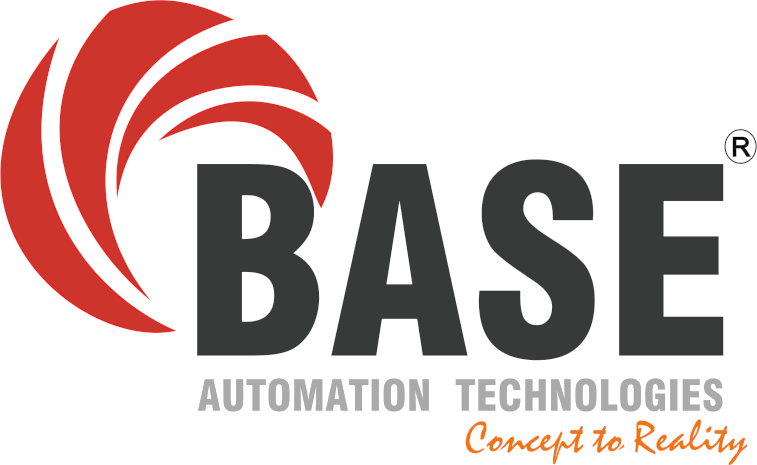

Connectivity
Direct connection from meters & sensors
Connects directly from the field without manual data entry.
- 100+ energy meters
- 70+ flow meters
- 25 temperature sensors
- Centralized, consistent data model

Utility Wise is a utility monitoring and analytics application developed by BASE Automation on the Ignition platform. It connects directly to your energy meters, flow meters and temperature sensors, and delivers dashboards for energy, water and temperature in one place.
From EUR / CUR graphs to WUR, steam ratio and temperature alerts, Utility Wise turns raw utility data into decisions.
A single application to monitor and analyse energy, water and temperature – with real-time dashboards, alarms and email notifications.
Connects directly from the field without manual data entry.
Graphs and KPIs for all major energy sources in your plant.
Clear visualization of water consumption and steam efficiency.
Temperature sensors are configured with limits so you know immediately when a parameter is out of range.
When something goes wrong, the right people are informed automatically.
Industrial-grade platform used worldwide for SCADA and IIoT.
Utility Wise provides intuitive dashboards for different user groups – plant operations, maintenance and utility managers – with drill-down to individual meters and sensors.
Visualise all your energy sources with EUR/CUR analytics and plant level summaries.
| Source | Load | Trend | Status |
|---|---|---|---|
| GRID | 420 kW | Stable | Normal |
| SOLAR | 160 kW | Rising | Utilized |
| DG | 65 kW | Occasional | Check runtime |
Dedicated views for WUR, steam ratio and temperature zones help you maintain process stability.
| Parameter | Value | Limit / Target | Status |
|---|---|---|---|
| WUR | 1.6 m³ / Unit | ≤ 1.8 | Within range |
| Steam ratio | 3.2 kg/kg | 3.0 – 3.5 | Optimal |
| Zone T-07 | 96.5 °C | Max 95 °C | High alert |
Temperature sensors and utility KPIs have configurable limits. When a parameter goes outside the allowed range, Utility Wise triggers alerts and email notifications to the configured team members.
Utility Wise is fully developed in Ignition, leveraging industrial standards for reliability, scalability and integration.
Share your details and BASE Automation can arrange a walkthrough of the application and discuss how it can be deployed for your plant.
Replace this text with your official phone number, email ID and office address to make this page customer-ready.